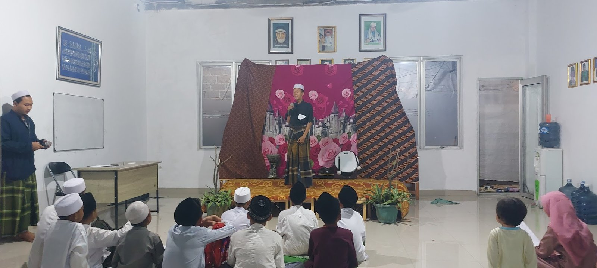
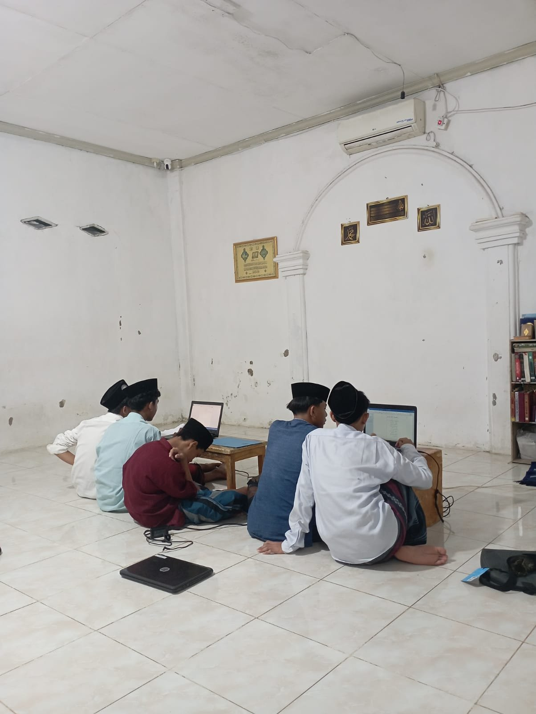
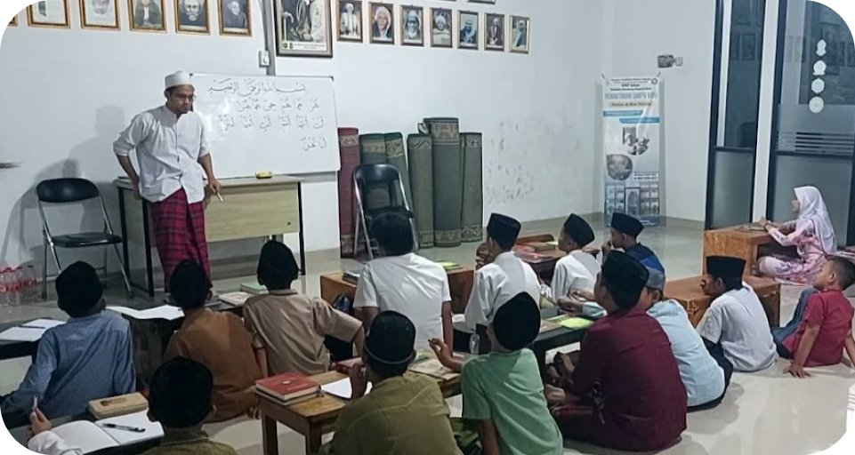
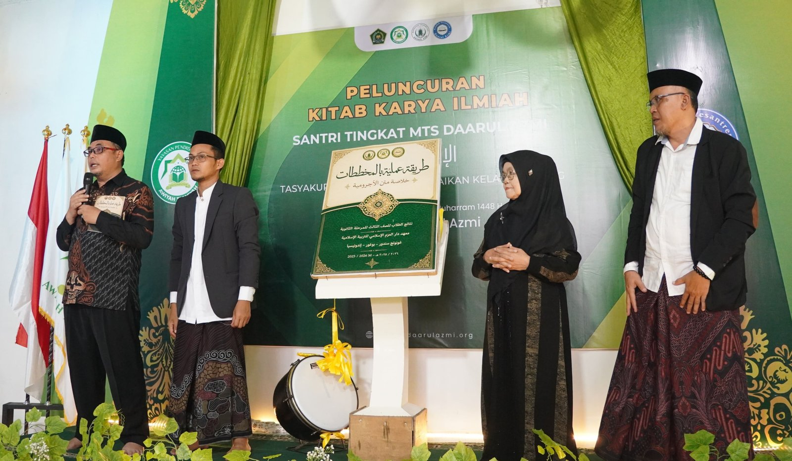
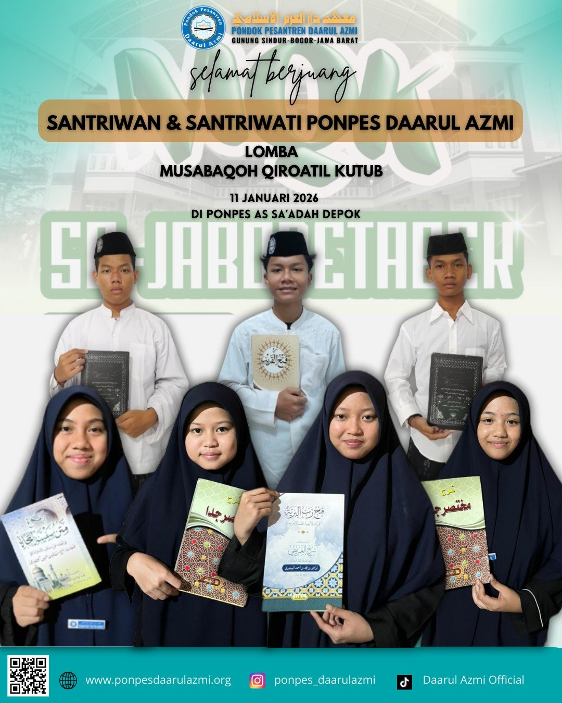
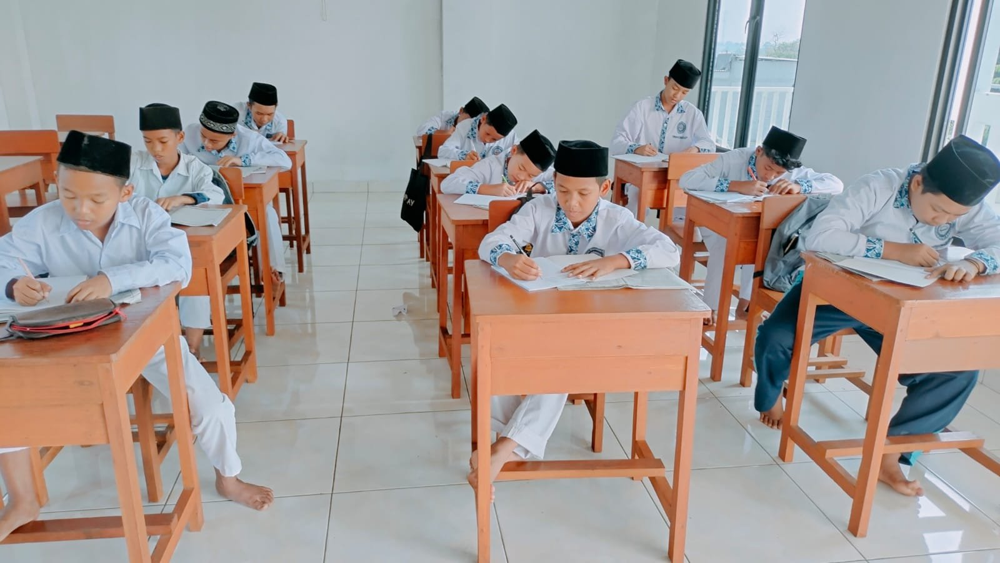
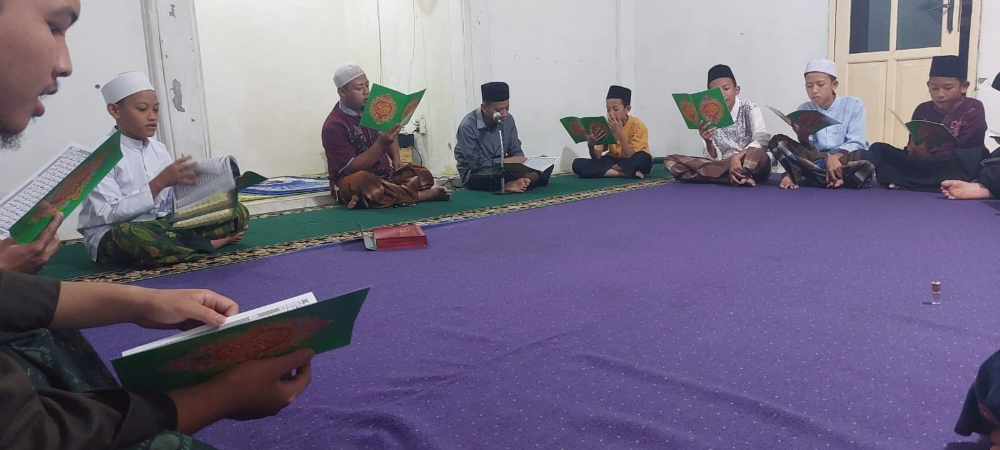

01 · Bahasa Arab & Inggris
Pendalaman Dwibahasa Aktif Internasional
- Mahkamah bahasa dan percakapan aktif setiap hari.
- Literasi kitab Arab dan penguasaan bahasa Inggris.
- Pelatihan pidato dan kepemimpinan santri.
معهد دار العزم الاسلامى
Kurikulum Terpadu

01 · Bahasa Arab & Inggris

02 · Dirasah Ilmiyah

03 · Teknologi & Komputer

Mengenal lebih dekat
Pondok Pesantren Daarul Azmi adalah Lembaga Pendidikan Islam yang memiliki visi dan misi dalam pembentukan akhlak dan mental terhadap generasi penerus dengan pembekalan pengajaran yang tidak hanya menuntut ilmu agama, tetapi juga keterampilan hidup yang relevan dengan perkembangan zaman.
SelengkapnyaKeunggulan kami
Sebagai salah satu pesantren terbaik di Jawa Barat, kami berkomitmen melahirkan generasi yang tidak hanya kokoh dalam aqidah, tetapi juga siap menghadapi tantangan era modern dengan akhlak yang terjaga.
Pembelajaran kitab kuning mendalam yang dipadukan dengan program akselerasi hafalan Al-Qur'an.
Bukan sekadar mengaji, santri dibekali kemampuan literasi digital, dasar komputer, dan media pembelajaran modern.
Terletak di wilayah yang sejuk dan tenang di Jawa Barat, menciptakan atmosfer belajar yang fokus dan konsentrasi.
Bimbingan langsung oleh para ustadz dan ustadzah yang memiliki kemampuan akademik serta kepedulian terhadap santri.
Penerapan disiplin harian melalui pembiasaan ibadah sunnah, adab, dan pembentukan karakter yang kuat.
Didukung oleh asrama yang bersih, ruang kelas representatif, laboratorium komputer, dan kegiatan ekstrakurikuler.
Khadimul Ma'had
Pimpinan Pondok Pesantren
Bernama lengkap (Al-Ustadz Kiyai) Ibnu Mubarok, lahir pada tanggal 17 Desember 1985 di Kp. Rawalembang, yang mana menjadi tempat berdirinya juga Pondok Pesantren Daarul Azmi yang dipimpin dengan semangat dakwah, pendidikan, dan pengembangan santri yang berilmu serta berakhlak.
“Membimbing santri bukan sekadar mentransfer ilmu kitab, melainkan menanamkan benteng akhlak dan ketahanan mental di era disrupsi digital.”Profile Pimpinan

Penerimaan Santri Baru
Pesantren Daarul Azmi merupakan pesantren terbaik di Jawa Barat, khususnya di Kecamatan Gunungsindur, dengan meluluskan santri yang kompeten dan menjadi ustadz terkemuka untuk mendakwahkan nilai-nilai keislaman di tengah masyarakat.
Hubungi via WhatsAppKoleksi online
Ringkasan akidah ahlu sunnah wal jama'ah yang jelas, padat, dan sangat cocok untuk pembelajaran dasar.
Kumpulan hadits-hadits akhlak, ibadah, dan perilaku mulia yang membentuk karakter muslim.
Kitab hadits fiqh yang populer dan praktis untuk memahami hukum-hukum ibadah dan muamalah.
Panduan tafsir ringkas tetapi kaya makna, sangat membantu dalam memahami ayat-ayat al-Qur'an.
Kitab nahwu yang membahas kaidah bahasa Arab secara sistematis dan sangat terkenal di kalangan santri.
Panduan nahwu sharaf yang pendek, ringkas, dan paling sering menjadi pijakan awal belajar bahasa Arab.
Warta & kabar

Pondok Pesantren Daarul Azmi terus menunjukkan semangat literasi unggul melalui peluncuran kitab karya ilmiah santri.

Hilwah Nafiza, santriwati berusia 13 tahun, berhasil mengkhatamkan Alfiyah 500 bait dengan pemahaman yang mendalam.

Pondok Pesantren Darul Azmi kembali menorehkan prestasi di ajang MQK dengan semangat kompetisi yang sehat.

Prestasi luar biasa santri Daarul Azmi menumbuhkan inspirasi baru bagi generasi muda dalam menuntut ilmu.
Momen kebersamaan




Galeri multimedia